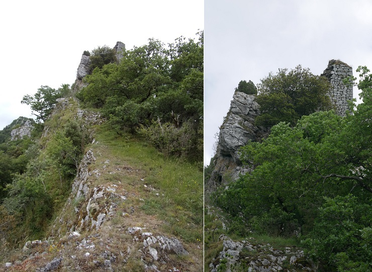
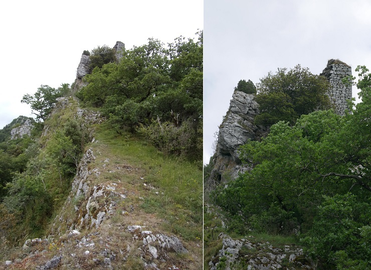

Sur les hauteurs du défilé de Joucou, Comme vu la semaine dernière lors de la randonnée de Joucou le long du Rébenty, se trouve le château d'Able ayant appartenu à la famille Nègre.
Pour nous faciliter le chemin nous sommes partis de la route de Belvis (D222), à partir de la première épingle à cheveux que fait la route en montant depuis le défilé de Joucou (D107).
Nous avons franchi le ruisseau du Pas de Joucou une vingtaine de mètres en contre bas.
(une balade sympa est de suivre le ruisseau du Pas de Joucou depuis la D107 à travers la forêt, mais comme nous l'avions déjà fait la semaine dernière, nous avons préféré directement nous garer au virage).
et pris un chemin qui montait directement dans la montagne. Un marquage avec des chiffons rouges orangés et verts apparaît rapidement (marquage assez ancien mais semble être présent jusqu'au château, même si à un moment on l'a perdu... et on s'est perdu...)
Recherche de point de repère pour retrouver le chateau, vu vers l'autre coté du Rébenty


 



Les gorges du Rébenty depuis le château d'Able